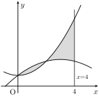

9.상수 \(a\)에 대하여 두곡선 \(y=x^2+3\), \(y=-\dfrac{1}{2}x^2+ax+3\)이 \(x\)좌표가 \(2\)인 점에서만날 때, 두 곡선과 직선 \(x=4\)로 둘러싸인 부분의 넓이는?[4.4점]

① \(8\)② \(10\)③ \(12\)④ \(14\)⑤ \(16\)
10.그림과 같이 두곡선 \(y=x^3-4x^2-5x-8\), \(y=x^3-7x^2+7x+7\)로 둘러싸인부분의 넓이가 직선 \(x=k\)에 의하여 이등분될 때, 직선 \(x=k\)가두 곡선과 만나는 두 점 사이의 거리는? [4.4점]
① \(23\)② \(24\)③ \(25\)④ \(26\)⑤ \(27\)